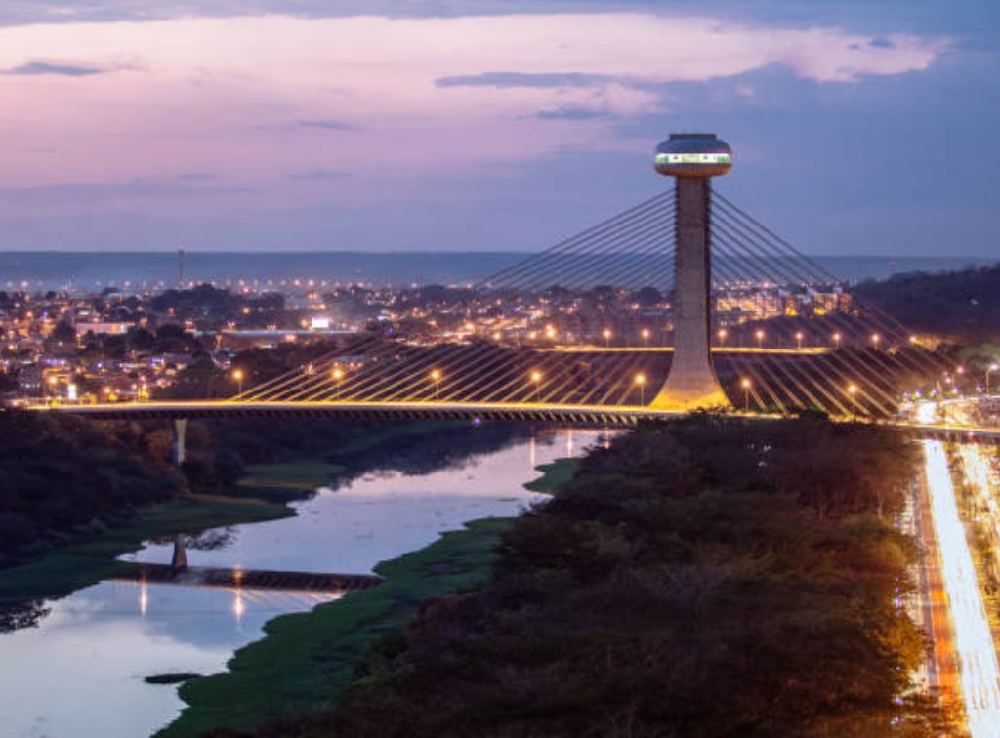

Piauí é um estado localizado na Região Nordeste do Brasil. Sua capital é Teresina, a única capital nordestina que não fica no litoral. O Piauí possui clima quente e apresenta áreas de sertão, cerrado e litoral. A economia do estado é baseada na agricultura, pecuária, comércio e extrativismo. Nos últimos anos, o cultivo de soja e milho cresceu bastante na região. Entre os pontos turísticos mais conhecidos estão o Parque Nacional da Serra da Capivara, famoso pelas pinturas rupestres e pela importância arqueológica, e a Praia de Atalaia. O estado também possui belas paisagens naturais e sítios históricos importantes.
